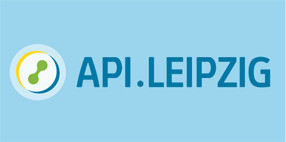
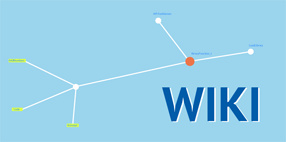
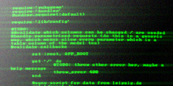

Portalübersicht
Anwendungsbeispiele der API.LEIPZIG
API.LEIPZIG und die Leipziger Agenda 21
Informieren Sie sich über die Ziele und die Umsetzung der Leipziger Agenda 21 im Bereich der Kultur- und Kreativwirtschaft.

Was ist die API.LEIPZIG?
API.LEIPZIG ist eine standardisierte Schnittstelle für den Zugriff auf Daten der Leipziger Kultur- und Kreativwirtschaft. Erfahren Sie mehr über die Hintergründe.
Anwendungen der API.LEIPZIG
API.LEIPZIG ermöglicht die Entwicklung anwendungsbezogener Dienste. Eine erste Anwendung zeigt die aktuellen Veranstaltungen der Leipziger Kultur- und Kreativwirtschaft.
Hilfe, FAQs & Tutorials

Tutorials und Dokumentation
Die Tutorials und die Entwickler-Dokumentation der API.LEIPZIG finden Sie im Wiki.

Entwickler gesucht
Welche Anwendung fehlt Ihnen? Sie können als Entwickler oder mit Ihren Ideen zur Erweiterung der API.LEIPZIG beitragen. Besuchen Sie das Wiki.